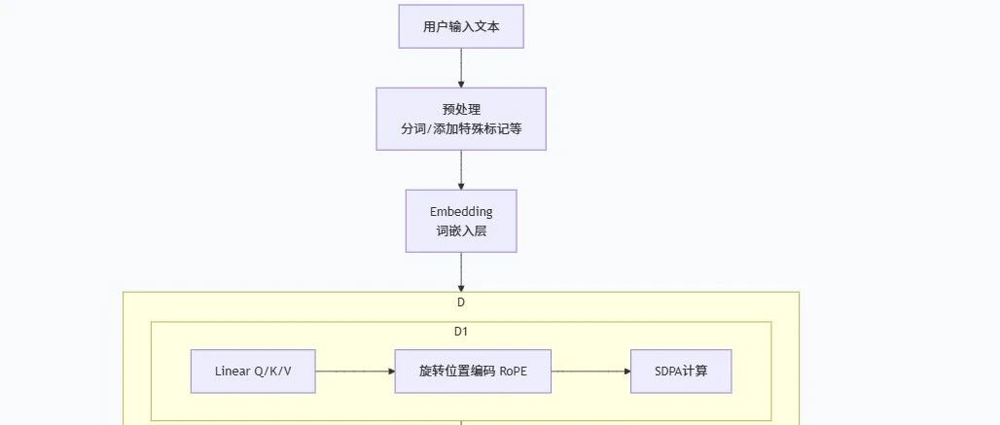

Transformer的推理流程详解--从零实现一个Transformer
引言
在人工智能的浪潮中，大语言模型如ChatGPT、Qwen等已经展现出令人惊叹的对话与创作能力。然而，这些模型并非真正的“思考者”，而是一个极其复杂的数学系统在执行精密的计算。本文将作为系列开篇，深入了解经典Transformer模型——Qwen2的推理内核，一步步拆解从用户输入到模型输出的全过程。我们将聚焦于模型在推理时究竟做了什么，揭示其将字符转化为回应的内在逻辑。从而让我们对现代大模型的工作机制有一个清晰而深刻的认识。
全文目录
引言
一、输入阶段
1.1 预处理
1.2 词嵌入
二、Decoder层
2.1 自注意力层
2.2 前馈神经网络层（FFN）
三、输出层
3.1 全连接层
3.2 后处理
全篇总结
输入阶段
用户输入文本
预处理
Embedding
Decoder层（循环N次）
自注意力机制（包括QKV线性变换，旋转位置编码，SDPA注意力计算）
前馈神经网络（FFN）（包括门控线性层和SiLU激活层）
输出阶段
全连接层
后处理
他们的关系可用一张图表示：

“猫” =
[0.2, 0.8, -0.1, 0.5, ...]“狗” =
[0.3, 0.7, -0.2, 0.4, ...]“飞机” =
[-0.5, 0.1, 0.9, -0.8, ...]
| 国王 | [0.9, 0.2, 0.3] | |
| 王后 | [0.8, 0.3, 0.2] | |
| 男人 | [0.6, 0.1, 0.4] | |
| 女人 | [0.5, 0.2, 0.3] |
一个词的重要性不是固定不变的。在上面的例子中，当模型处理“it”时，“animal”极其重要；但当模型处理“street”时，“the”和“cross”可能变得更重要。
）线性变换得到Q, K, V
我们有三个可学习的权重矩阵：W_q, W_k, W_v。它们是通过大量语料训练来的。包含着一般意义上词之间常见的关联程度。我们将每个词的嵌入向量 E 分别与这三个矩阵相乘，可得到该词的查询向量Q、键向量K和值向量V。
其中，Q 可以理解为当前词发出的“问题”：我应该关注谁？K 可以理解为每个词自带的“标签”：我的内容是什么？V 可以理解为每个词真正的“信息”：我被关注时应该提供什么内容。
）计算注意力分数对于当前词（例如“it”），通过矩阵的转秩用它的 Q 与序列中所有词的 K 进行点积（Q * Kᵀ）。点积衡量的是两个向量的相似度。Q_it和 K_animal的点积越大，说明在处理“it”时，“animal”这个词越重要。
）缩放与Softmax
缩放：将分数除以
√dₖ（dₖ是K向量的维度）。目的是防止点积结果过大，导致Softmax梯度消失。Softmax：将分数归一化为一个概率分布，所有词的权重之和为1。这个权重就代表了其他词对当前词的相对重要程度。至于为什么是这个看似奇怪的值，是因为它是Q 和 K 向量点积结果的标准差，可以使归一化的效果最佳。其中内在的数学原理这里不多解释。
4. ）加权求和得到输出
将上一步得到的注意力权重，与对应的V向量相乘并求和。最终输出
Z_I 是一个加权平均后的向量。它包含了序列中所有词的信息，但根据重要性进行了融合。权重高的V向量，对最终输出的贡献更大，这样就实现了注意力。
在得到Q,K和V之后，还要先对Q和K计算旋转位置编码（ROPE），毕竟，不同的词在句子中的不同位置，它们含义差别非常大。
（举例：僧游云隐寺 和 寺隐云游僧）
这其中的意义差距，往往来自于词之间的相对位置区别，所以，我们会处理Q和K，使得后面它们相乘的时候将位置信息包含在内。
处理的方式就是让这两个张量乘以对应维度的旋转矩阵：

这是一个二维旋转矩阵，可以扩展到高维。
RoPE最精妙的地方在于，当计算旋转后的Q和K的点积时：
<f(q, m), f(k, n)> = g(q, k, n-m)
这个内积的结果只依赖于原始向量 q, k 和它们的相对位置 (n-m)。这意味着：模型能够自然地学到相对位置信息且拥有强大的外推性，即使序列长度在推理时远大于训练时，只要相对位置 (n-m) 在训练时见过，模型就能处理。
除此之外，为了节省Q，K，V三个矩阵所带来的大量内存需求，自注意力层往往被划分为多头分组查询注意力层。将输入张量的维度（假设是1024）按照注意力头数（假设是512）划分为512个2(维）的小张量，因为多组小张量可以共用一组K和V，所以K和V都可以简化为几个二维的小张量。在计算的时候，Q和K，V进行大量的分组运算，最后拼到一起也能起到近似的效果。
这里还要解释一下为什么多组小张量可以共用一组K和V，那是因为每一小组Q和它的兄弟小组Q并不是独立的，它们只是同一个事物的不同维度，如果这个方面关联性强，那么往往在其他层面的关联性也不弱，意义也会有一定的关联性。所以，只要几组KV来评判关联性就能起到很好的效果。
（举个例子，学生时代总是用考试成绩来评价你这个人，虽然说考试成绩只是人生无数个维度的一方面，但是这样在大群体中能筛查出相对较为突出的人群。虽然真实效果绝对不能说完美，但是节省了大量社会资源）
结束以上运算之后，模型得到了一个张量Z，这个张量和一开始的输入张量形状一样，但是每个词都已经按照注意力整合了整个句子其他词的信息。
2.前馈神经网络层
前馈神经网络虽然叫“前馈”，但是它的实际位置在注意力层之后。之所以叫“前”，是因为其中的数据只能前向传播。
前馈神经网络分为门控投影，上投影和下投影。因为自注意力机制捕捉全文信息的能力偏线性，所以我们用门控神经网络来集成非线性的处理，从而更好的处理上下文。下面是它们的分别介绍
1. 门控投影
功能：产生一个门控信号。这个信号的作用是像一个“智能水龙头”或“滤波器”，用来控制来自上投影的信息流中，哪些部分应该被强调，哪些应该被抑制。
操作：
gate = SiLU(x W_gate)W_gate是一个权重矩阵，形状通常为[d_model, d_ff]。它将输入x从d_model维投影到d_ff维。SiLU激活函数：这是关键。
SiLU(x) = x * sigmoid(x)。它输出一个在0（完全抑制）到略大于1（强调）之间平滑变化的门控值。输出：一个与“上投影”输出形状相同的门控向量，其每个元素都是一个0到1之间的权重值。
门控投影就像一个调音台，它为乐曲的每个频率通道（特征维度）生成一个音量过滤器。
2. 上投影
功能：将输入特征提升到一个更高维、更丰富的表示空间。你可以认为它是在“生成”或“提出”一系列原始的特征和组合。
操作：
up = x W_upW_up是一个权重矩阵，形状通常也为[d_model, d_ff]。注意：上投影是一个线性变换，没有激活函数。
输出：一个高维的原始特征向量，形状为
[d_ff]。
上投影就像乐队或音源，它产生了原始、丰富的音频信号。
3. 下投影
功能：将经过门控调制后的高维特征，压缩回模型主干所需的维度。它负责融合和总结被门控筛选后的信息。
操作：
down = (gate ⊙ up) W_down首先，进行门控操作：
gate ⊙ up（逐元素乘法）。这相当于用调音台的推子去调节音源每个通道的音量。然后，将调制结果通过
W_down线性层，其形状为[d_ff, d_model]。输出：最终FFN层的输出，其维度与输入
x一致，均为[d_model]，以便进行残差连接。
下投影就像最终混音和输出接口，它将调节好的音频信号混合起来，并转换成标准的输出格式。
前馈神经网络就像揉面团，它先将面团揉开，过筛后再团到一起，使得面团各部分也就是我们的上下文紧紧融合。

和 Top_K：
| Top-k | |||
| Top-p |
这张表展示了p值和k值的选取原则。
以上是主要的后处理步骤，部分模型有其他步骤，这里不再一一列举。
四、循环原则
走到这，真正的答案才输出第一个token，而我们要看到大段的输出，前面的Decoder层要不断地循环，且每一次都要加上上一轮的生成，只有这样，才能生成完整流畅的句段。
举个例子，我们问：法国的首都是？
模型的运行过程可以分为以下几步：
第一轮：
输入：
[CLS] 法国的首都是? [SEP]输出分布：模型输出整个词表上一个概率分布，其中“巴黎”的概率最高。
采样：根据这个分布，选择概率最高的“巴黎”作为输出。
结果：得到第一个token：“巴黎”。
第二轮：
输入更新：将“巴黎”追加到上一轮的输入后，形成新的输入：
[CLS] 法国的首都是? [SEP] 巴黎再次前向传播：模型基于这个新的、更长的序列再次计算。
输出分布：模型现在输出下一个词的概率分布，其中“<EOS>”的概率可能很高。
采样：选择“<EOS>”作为输出。
结果：得到第二个token：“<EOS>”（结束符）。
循环结束：
因为生成了结束符
<EOS>，生成过程停止。最终回答：“巴黎”。
这就是真实的模型对话过程。
全篇总结
本文系统性地剖析了Qwen2这类Transformer模型在推理过程中的核心环节，构建了一个从输入到输出的清晰认知框架。
整个过程始于输入阶段，通过预处理将用户查询嵌入特定模板，为模型提供对话上下文与角色设定；再经由词嵌入层，将文本符号转化为富含语义信息的高维向量，使模型能够“读懂”文字。
核心的Decoder层则承担了信息深度加工的重任。其中的自注意力机制通过“Query-Key-Value”模型与旋转位置编码，动态计算序列中所有词之间的关联强度，让每个词都能结合理解全局上下文，从而生成全新的上下文感知表示。随后的前馈神经网络则进行非线性加工，通过“门控投影-上投影-下投影”的“揉面”过程，进一步融合与升华特征，增强了模型的表达能力。
最终，在输出阶段，全连接层将精炼后的特征投影为整个词表的原始分数。随后，后处理环节开始工作：Softmax将分数转化为概率；重复惩罚与温度调控输出的保守与创新程度；Top-P与Top-K采样则联手从大量概率中筛选出最终候选，平衡了生成的质量与多样性。
总而言之，大模型的推理并非神秘的黑箱，而是一个由多个精心设计的模块串联而成的、可解释的数据流 pipeline。理解这条从“字符”到“意义”的转化之路，是深入探索并驾驭人工智能技术的关键第一步。在接下来的文章中，我们将结合代码，对每一个环节进行更为细致的探索。